炎炎夏日，看看古画里的水果！
 219,930
219,930
炎炎夏日，水果必不可少。下面就让我们一起欣赏国画里的奇珍异果吧！画功不凡啊！看到你流口水。
枇杷
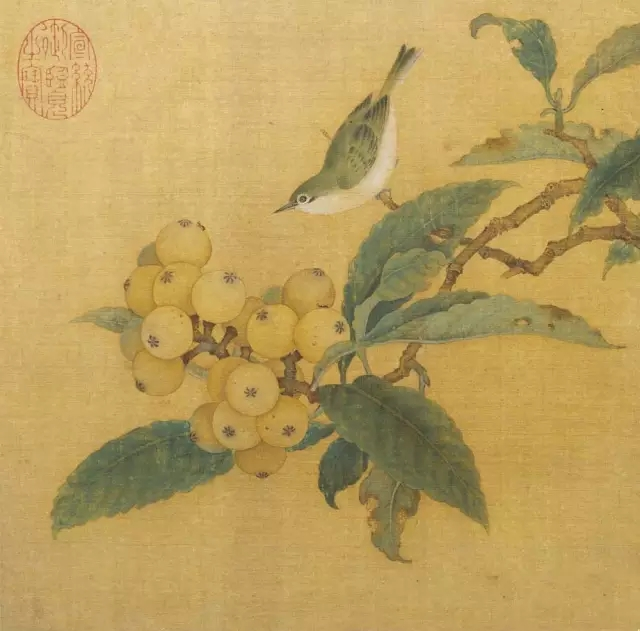
南宋 吴炳 《枇杷绣羽图》 （美国大都会艺术博物馆藏）
苏轼写过一首《食荔枝》诗：“罗浮山下四时春，卢橘杨梅次第新。日啖荔枝三百颗，不辞长作岭南人。”诗中提到三种水果：卢橘、杨梅、荔枝。估计都是苏轼喜欢吃的果子。曾有友人问苏轼：“卢橘何种果类？”苏轼回答：“枇杷是也。”
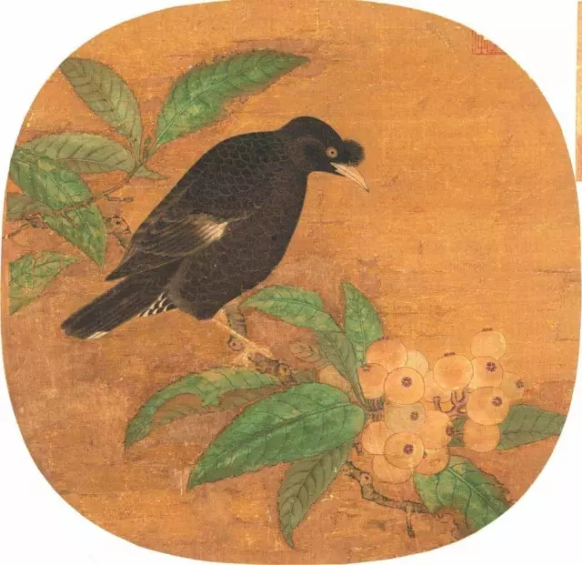
宋代 吴炳《枇杷山鸟图》
乳鸭池塘水浅深，熟梅天气半阴晴。
东园载酒西园醉，摘尽枇杷一树金。
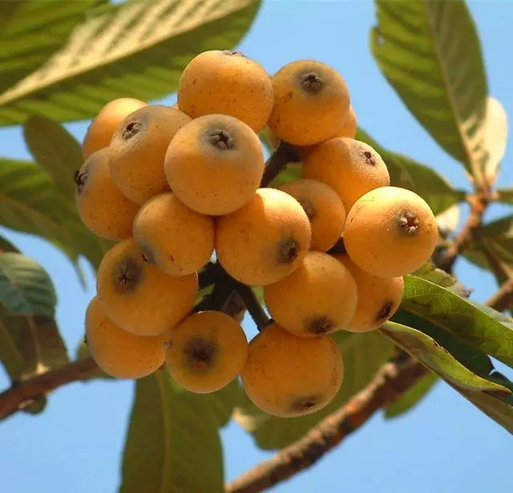
桑葚
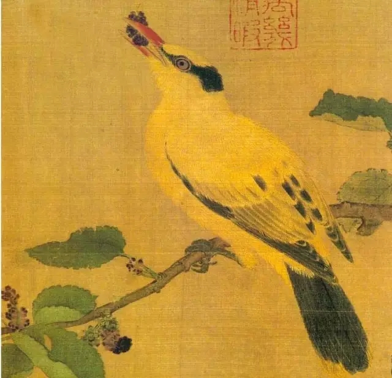
《桑果山鸟图》宋 佚名 台北故宫博物院藏
此图有宫廷画院的工丽之风，却多了几分粗犷率真。画面取一斜伸桑枝，在一细劲的枝条上站立一只山鸟，憨态可掬，嘴里还叼着桑葚，表情很有几分稚趣。
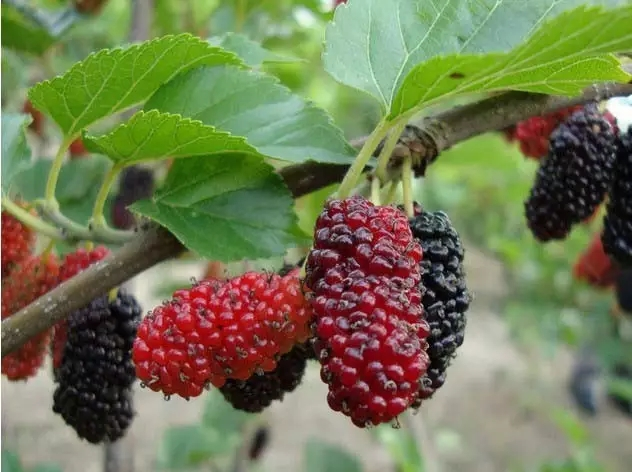
参差红紫熟方好，一缕清甜心底溶。
樱桃
南宋 佚名《樱桃黄鹂图》局部 （上海博物馆藏）
“流光容易把人抛，红了樱桃，绿了芭蕉。”可见樱桃也是宋人熟悉的水果，唐宋诗人还用“樱桃樊素口，杨柳小蛮腰”来形容女子的风姿。
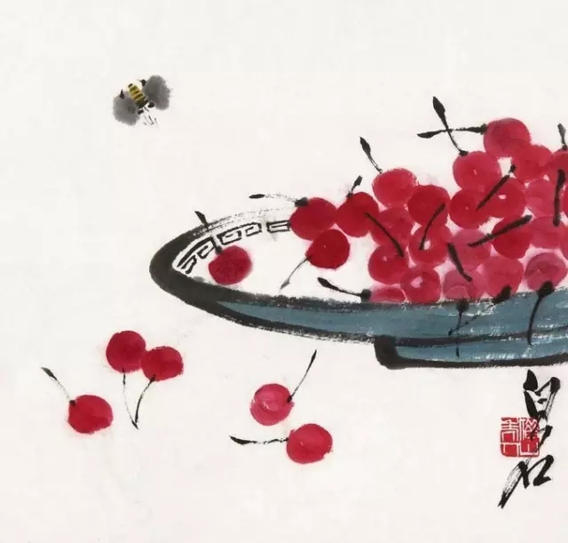
齐白石《樱桃图》
绿葱葱，几颗樱桃叶底红。
荔枝
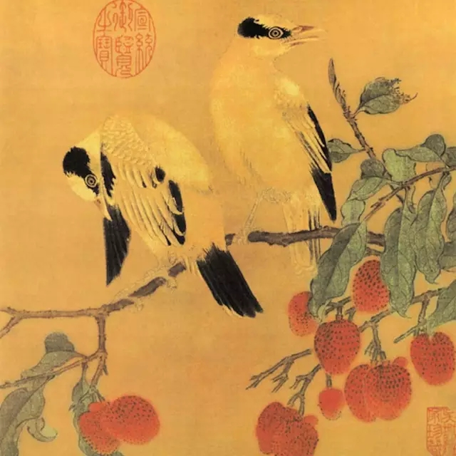
宋 佚名《离支伯赵图》
一骑红尘妃子笑，无人知是荔枝来。
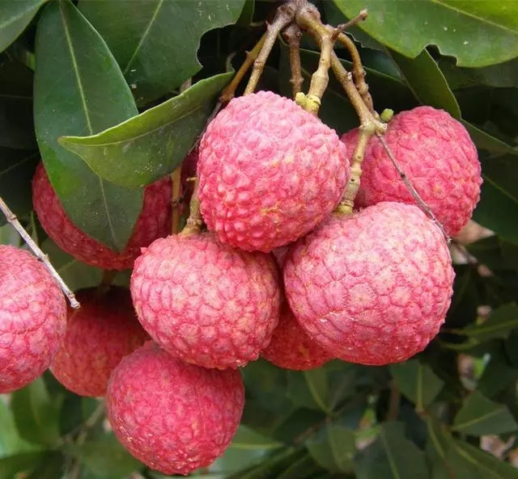
山楂
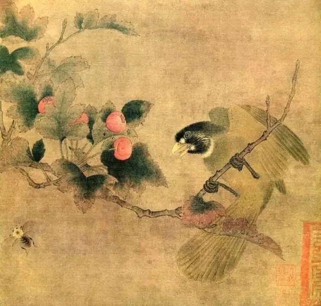
南宋 佚名 《红果绿鹎图》局部 （上海博物馆藏）
图中“红果”即是山楂，山楂在宋人生活中很是常见，陆游有《出游》诗写道：“行路迢迢入谷斜，系驴来憩野人家。山童负担卖红果，村女缘篱采碧花。”诗人在出游途中，看到山里的儿郎正挑着担子贩卖山楂呢。
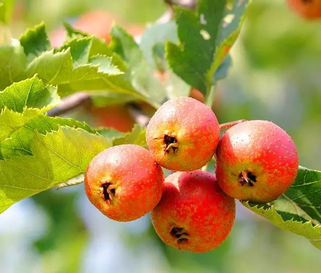
石榴
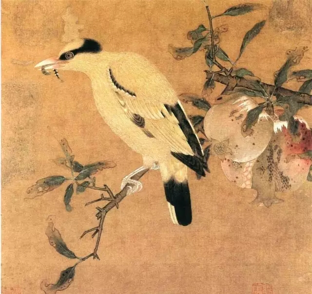
南宋 佚名《榴枝黄鸟图》（北京故宫博物院藏）
画面出现的是石榴。石榴也是宋人常见的水果，杨万里有《石榴》诗咏道：“雾縠作房珠作骨，水精为醴玉为浆。”因石榴多籽，也常作为“多子多福”的象征出现在画作中。
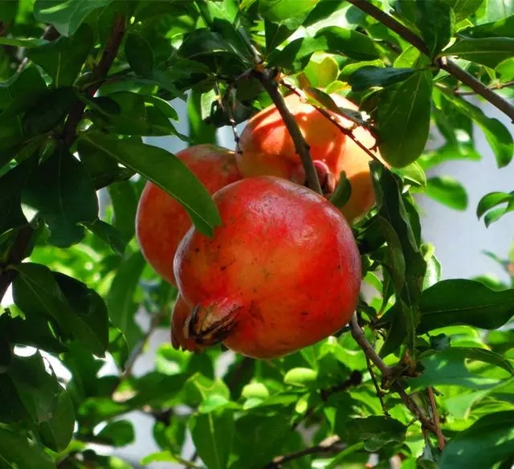
葡萄
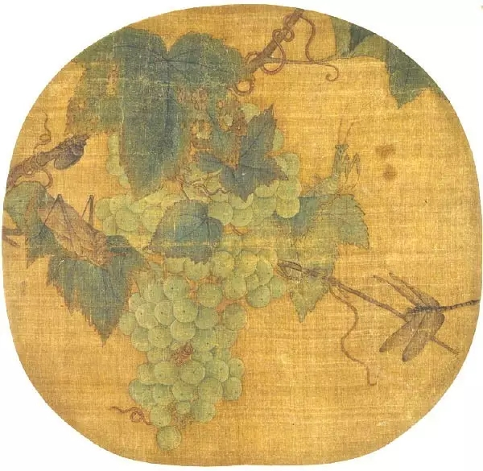
南宋 林椿《葡萄草虫图》（北京故宫博物院藏）
宋人不但将葡萄当食用的时鲜水果，还用来酿酒。苏颂《本草图经》说：“葡萄，生陇西五原，敦煌山谷。今河东及近汴州郡皆有之。苗作藤蔓而极长，太盛者一二本绵被山谷间。花极细而黄白色，其实有紫白二色，有圆如珠者，有长似马乳者，有无核者。皆七月八月熟，取汁可酿酒。”
苹果
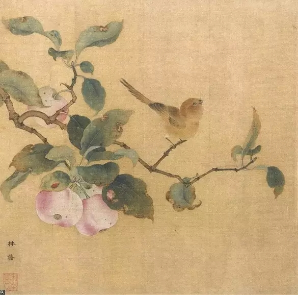
林椿《果熟来禽图》
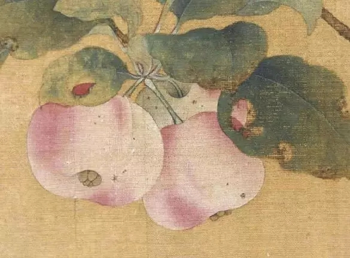
林椿《果熟来禽图》局部
画的是林檎果，亦即苹果。在某次“鉴宝”节目的海选中，曾有收藏者带了一件宋代官窑的苹果形笔舔，前来请瓷器鉴赏方面的专家鉴定。专家说：“这是仿品，器形不对。”收藏者说：“你看这紫口铁足，玉质感又强，怎么会是仿品呢？”专家说：“宋代会有进口的苹果吗？”苹果确实是从外国传入的水果品种，不过传入的时间非常早，宋人已吃上苹果是毫无疑问的。
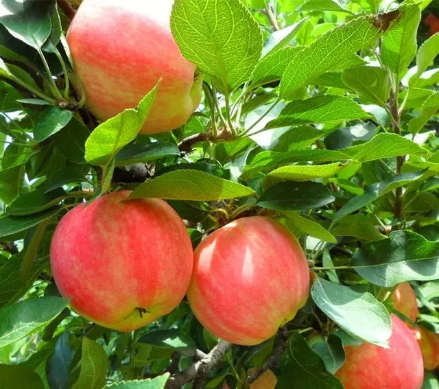
桃子
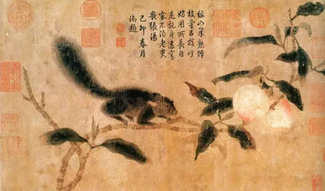
宋末元初 钱选 《桃枝松鼠图》（台北故官博物院藏）
宋代的桃子也有很多品种，《嘉泰会稽志》载，“桃之品不一，上原之金桃、御桃、摆核、十月桃、庙山之早绯红桃、湖南之大绯红桃、萧山之水蜜桃、唐家桃、邵黄桃、杏桃、川桃、晚秋桃、孩儿面桃、诸暨乌石之鹰觜桃、诸家园中有昆仑桃、匾桃、矮桃之类，不可悉数。”
柑橘
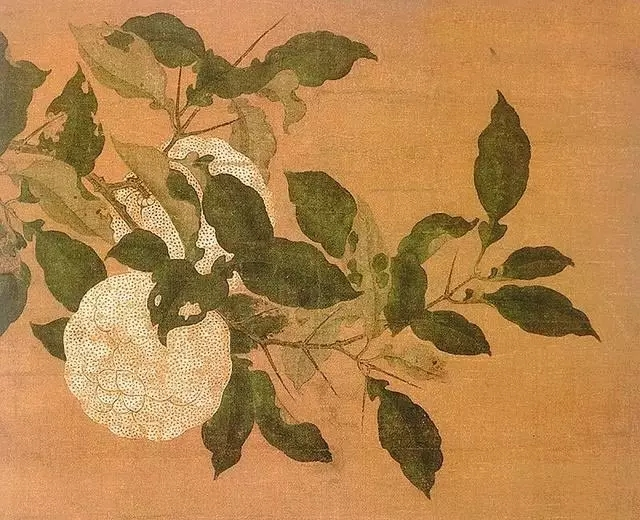
宋代 佚名 《香实垂金图》 （台北故官博物院藏）
宋代柑橘品种丰富，宋人韩彦直著有《橘录》，将柑橘分为柑、橘、橙三大类，每类下面又各有若干品种：“橘出温郡，最多种。柑乃其别种，柑自别为八种；橘又自别为十四种；橙子之属类橘者，又自别为五种。合二十有七种。”其中，“乳柑推第一”，乳柑中又“推泥山为最”。
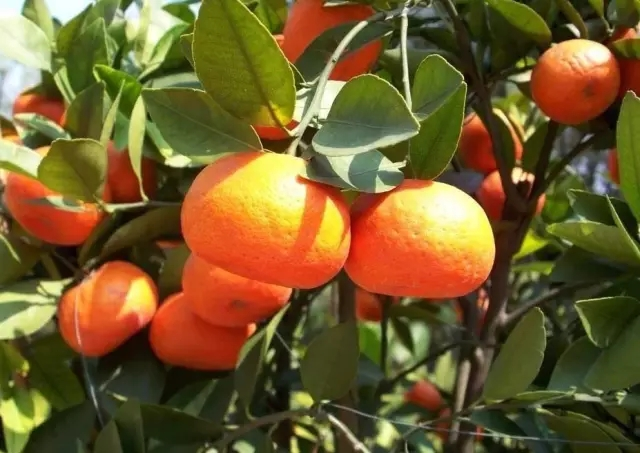
西瓜
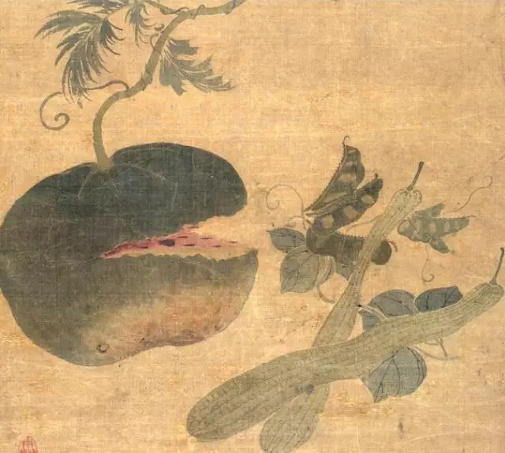
元 钱选 《蔬果图》
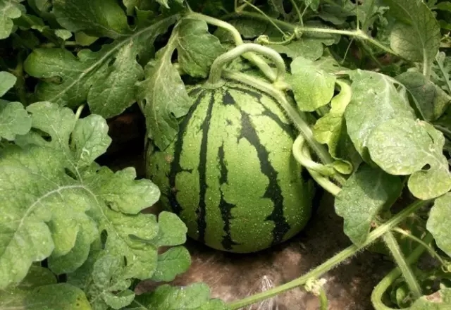
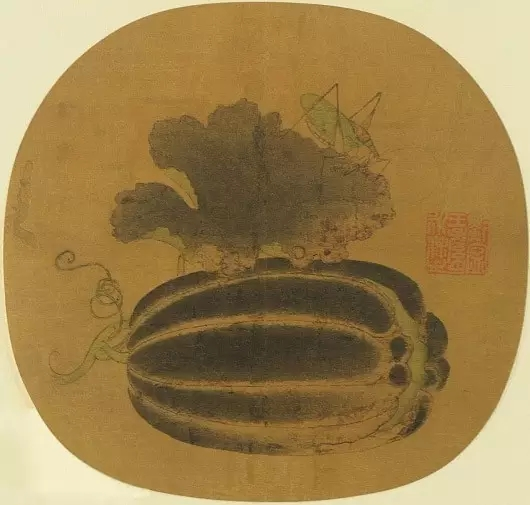
《瓜》宋 佚名《宋人集绘册：草虫瓜实》
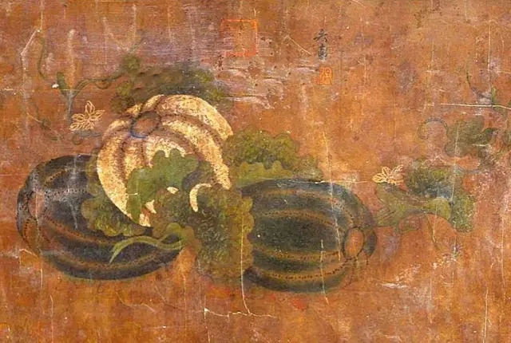
吴鼎 《瓜果图》
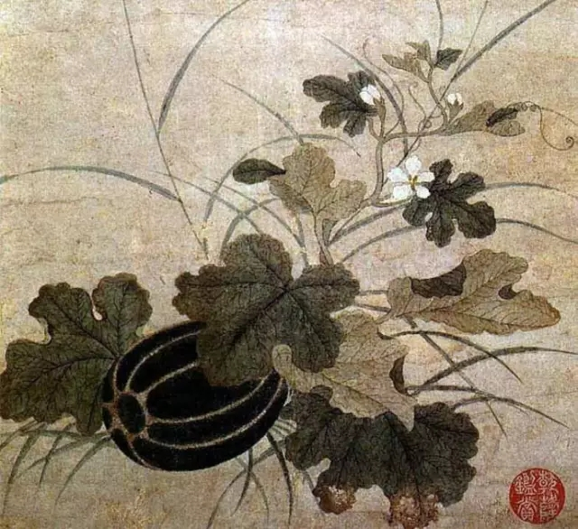
宋 钱选 《秋瓜图轴》
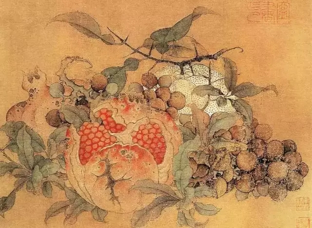
《橘子、葡萄、石榴图》 宋 鲁宗贵
此幅画橘子、石榴、和葡萄，象征多子多孙的美好愿望。用色精细、沉着，写实性极强。在左半部靠近后景的石榴叶片上有不规则的“鲁宗贵”款署，题字极小，隐约可见，在留传下来的南宋作品中，很少有鲁宗贵题款的作品，此图因此殊为珍贵。
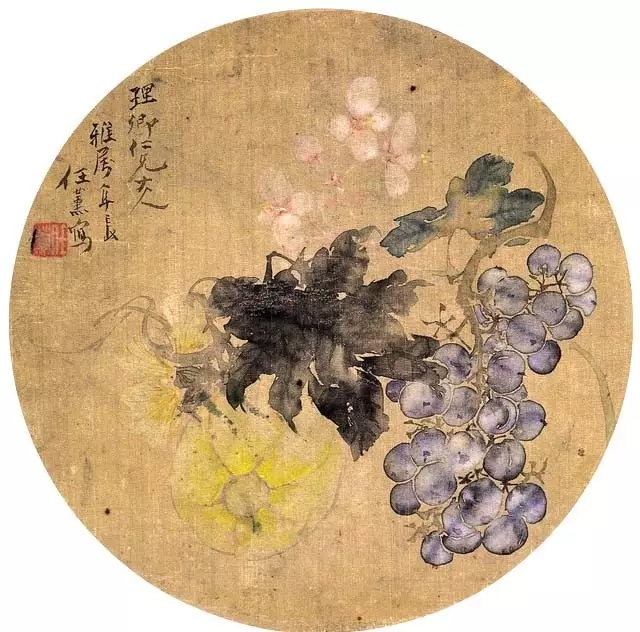
清 任薰 《瓜果图》
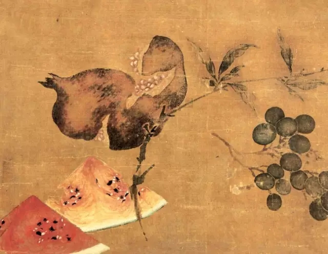
宋 《花卉瓜果图》